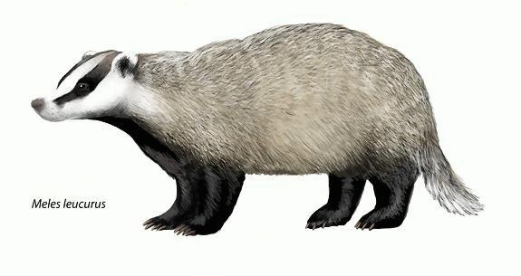
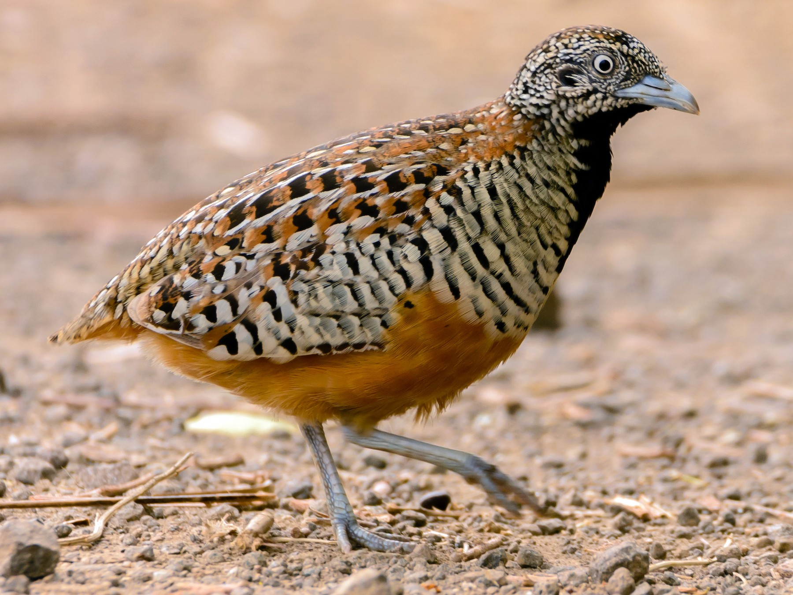
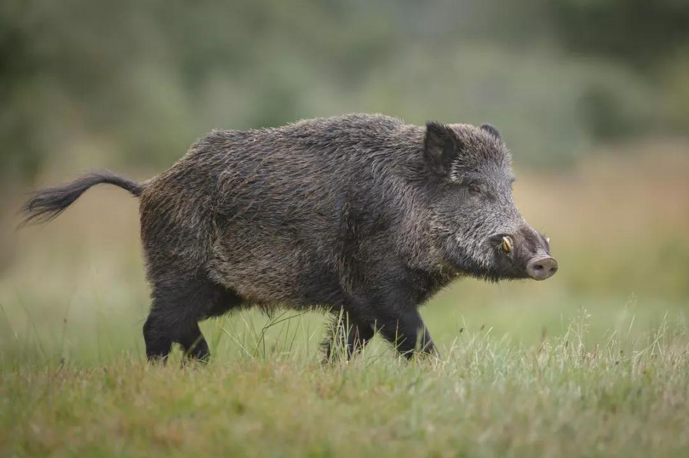
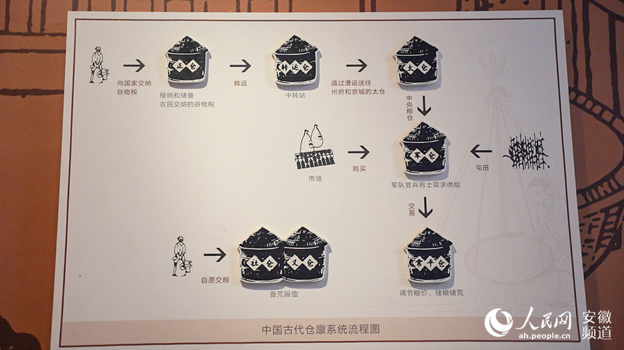
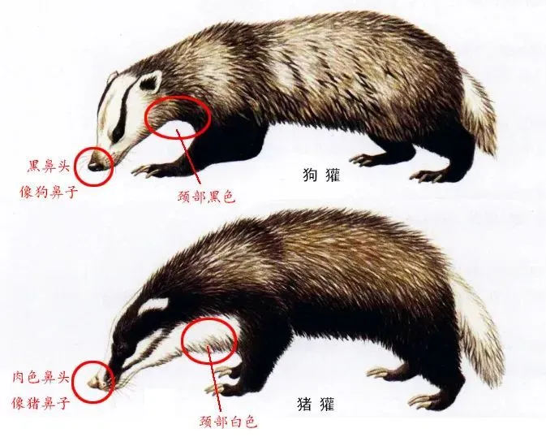

《詩經》魏風．伐檀
坎坎伐檀兮，寘之河之干兮，河水清且漣猗。
不稼不穡，胡取禾三百廛兮？
不狩不獵，胡瞻爾庭有縣貆兮？
彼君子兮，不素餐兮！
坎坎伐輻兮，寘之河之側兮，河水清且直猗。
不稼不穡，胡取禾三百億兮？
不狩不獵，胡瞻爾庭有縣特兮？
彼君子兮，不素食兮！
坎坎伐輪兮，寘之河之漘兮，河水清且淪猗。
不稼不穡，胡取禾三百囷兮？
不狩不獵，胡瞻爾庭有縣鶉兮？
彼君子兮，不素飧兮
檀：青檀，用來蓋房子的木材，也可做車子
輪、輻：青檀，車輪
坎坎：伐木聲
寘：放在
河之干：河岸
漘：水邊
不稼不穡：沒有播種
胡：憑什麼
禾：殼食
三百廛兮：三百戶的糧食
三百億兮：三千萬石的糧食
三百囷兮：三百個倉稟的糧食
縣：同懸，繫掛
淪：漣猗
彼君子兮：君子不會希望這種不撈而獲的事情
不素餐兮、不素食兮、不素飧兮：不吃白食
饔：早餐
飧：晚餐
※古人只吃兩餐，所以沒有午餐
貆

特

鶉(鵪鶉)

野豕

倉稟：放糧食的倉庫

